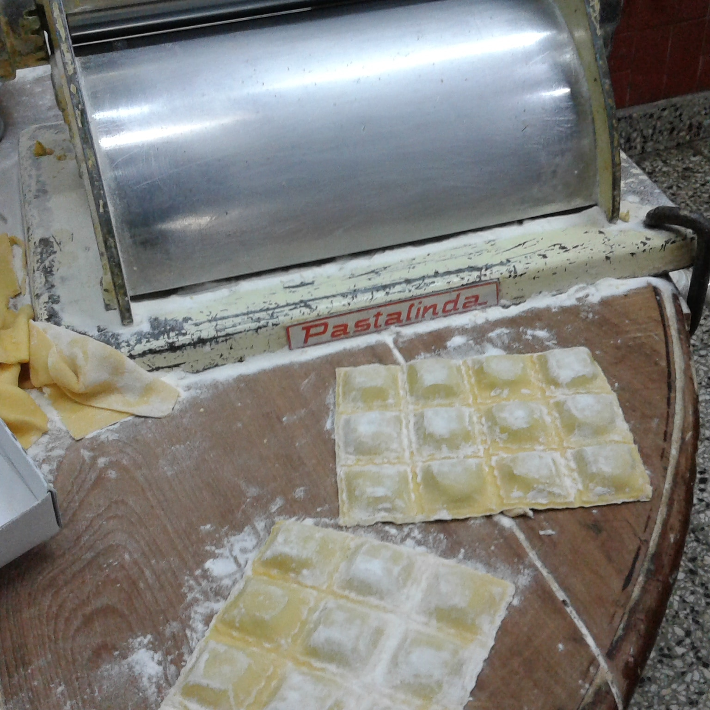
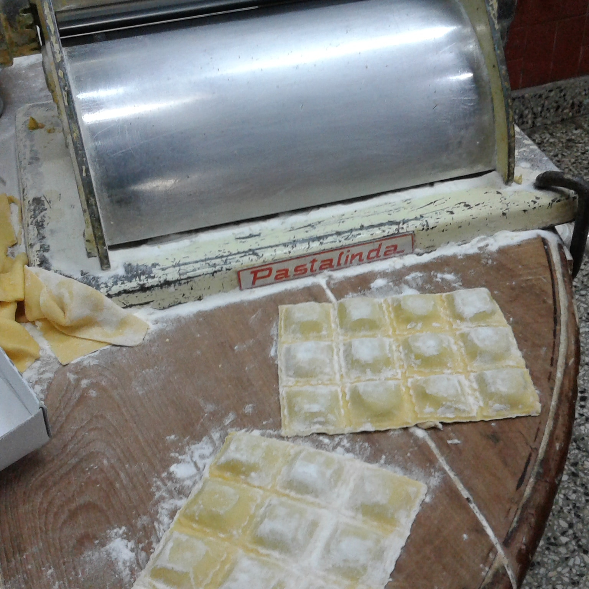
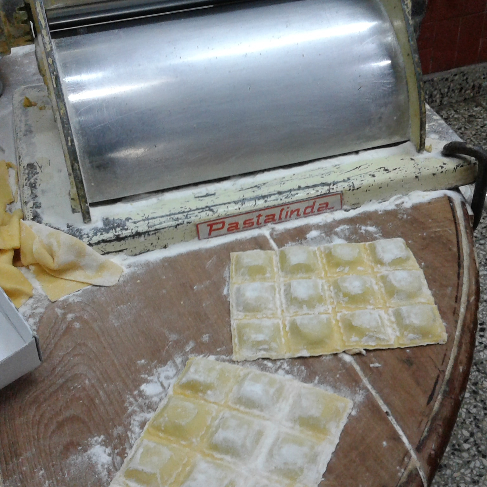
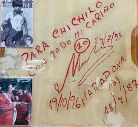

Galería


 

Desde 1956 en La Paternal, Buenos Aires 🍝
Ganadora de los premios Clarín y Martín Fierro 2005, Cantina Chichilo es un ícono de la gastronomía porteña. Elegida por Pol-Ka para sus producciones y por figuras como Diego Maradona, somos una tradición en el barrio de La Paternal.


Ranas a la Provenzal
Un clásico de la casa.

Flan casero mixto
Hecho con puro huevo, con crema y dulce de leche.
Kinotos en almíbar
Un postre artesanal único.

Cerezas flambé con helado
¡Pura tentación!
Diego fue más que un cliente. Fue parte de la familia de Chichilo.
“Este lugar es como comer en casa de mi abuela.”
Gracias, Diego, por elegirnos.
Dirección: Camarones 1901 esq. Terrero 2006, CABA
Teléfonos: 011-4581-1984 / 011-4584-1263
🕐 Jueves y viernes: Cena
🕐 Sábados: Almuerzo y cena
🕐 Domingos: Almuerzo